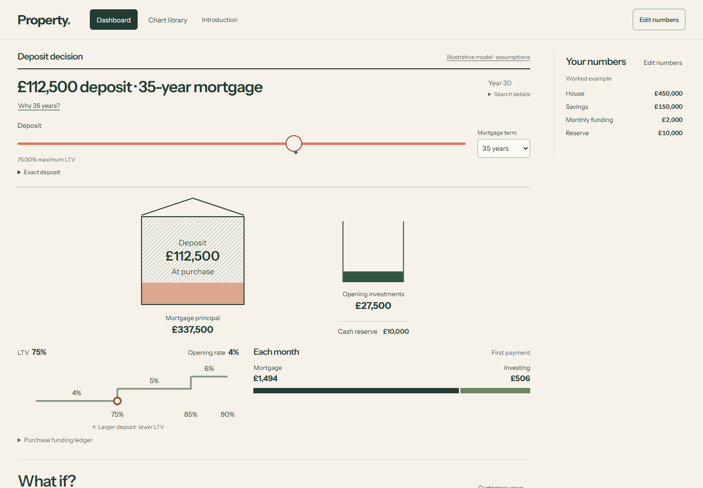
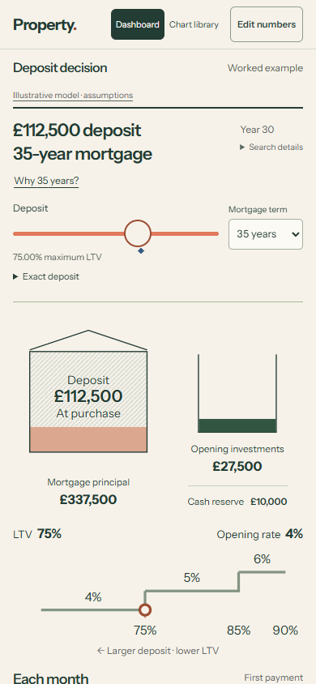
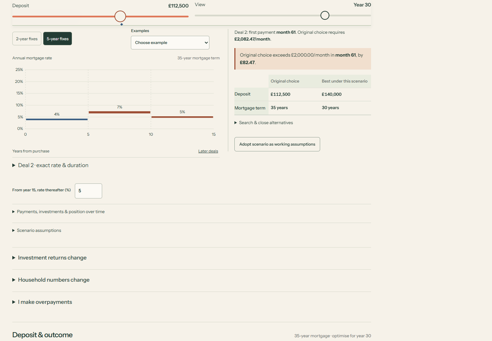
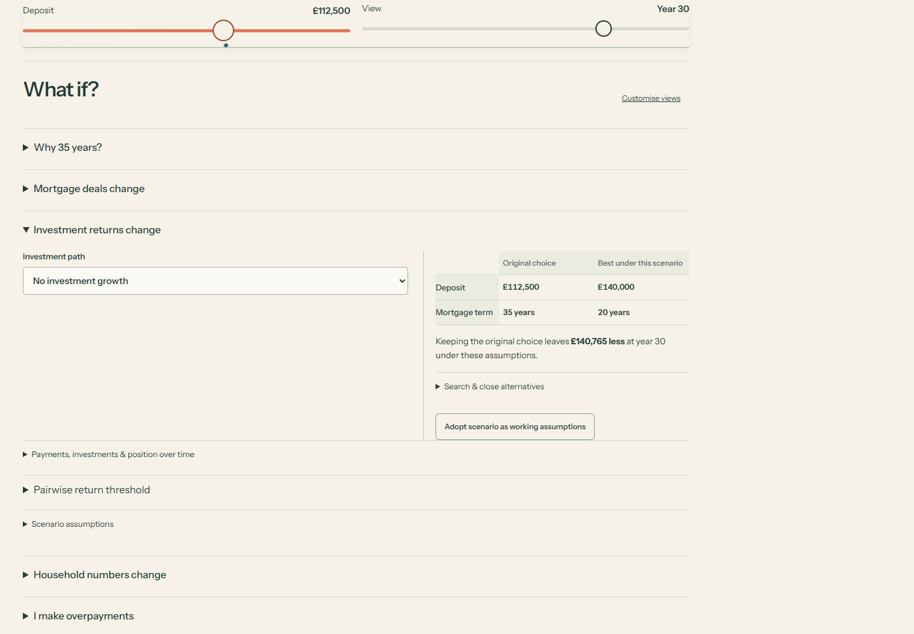

R4-v4: what changes the purchase choice?
The opening leads with deposit and term. Each scenario searches the permitted purchase plans, keeps the original choice visible and explains the consequence under the same changed assumptions.
Illustrative, sampled optimisation. Owner visual feedback pending; production financial behaviour is unchanged.




Four ordinary-use journeys
Desktop
Continuous, unedited 1× recording of all four journeys. 1440 × 1000. Mouse and keyboard.
Journey timestamps
- 0:07 — Initial purchase decision
- 0:17 — Monthly trade-off and investment-minus-debt explanation
- 0:24 — Deposit funding boundary and actual reason
- 0:35 — Raise the second five-year deal; opening rate held
- 0:40 — Original choice first shortfall; revised deposit and term
- 0:44 — Second fix lasts two years; later deals shift
- 0:50 — Monthly evidence at the shifted renewal
- 1:01 — No investment growth: full search finds 140000 over20 years
- 1:14 — Original assumptions restored
- 1:22 — Funded entered monthly and one-off strategy
- 1:24 — Starting deposit and term under that commitment
- 1:38 — Optional strategy includes retaining the money; unchanged purchase decision
Phone touch emulation
Continuous, unedited 1× recording of all four journeys. 390 × 844. Emulated touch; no physical-device test.
Journey timestamps
- 0:09 — Initial purchase decision
- 0:20 — Monthly trade-off and investment-minus-debt explanation
- 0:27 — Deposit funding boundary and actual reason
- 0:39 — Raise the second five-year deal; opening rate held
- 0:44 — Original choice first shortfall; revised deposit and term
- 0:49 — Second fix lasts two years; later deals shift
- 0:55 — Monthly evidence at the shifted renewal
- 1:07 — No investment growth: full search finds 140000 over20 years
- 1:19 — Original assumptions restored
- 1:27 — Funded entered monthly and one-off strategy
- 1:30 — Starting deposit and term under that commitment
- 1:44 — Optional strategy includes retaining the money; unchanged purchase decision
Observed decisions
| Scenario | Purchase choice / consequence |
|---|---|
| Base | £112,500 deposit · 35 years, year 30 objective. |
| Why 35? | Nearest shorter funded term 30: £95,327.12 more invested, £81,142.61 more debt; £14,184.51 net advantage. Pairwise reversal in 4–5% tested return interval. |
| No investment growth | Full search: £140,000 · 20 years. Keeping original costs about £140,765 under zero growth. |
| Opening 5 years, then 7% for 5 years, then 5% | £140,000 · 30 years. Original first shortfall month 61: £82.47/month. No unfunded wealth comparison. |
| Entered overpayments | £100/month months 60–240; £10,000 from investments in month 120, available then. Original-plan comparison saves about £31,085 interest through year 30 but leaves about £10,824 less net position. Optional search includes retaining all money. |




Checks and boundaries
73 exploratory Python tests, 10 introduction tests, 21 JavaScript tests; 4,730 production backend tests passed (2 optional PyYAML warnings). Ruff and strict mypy (53 source files) passed. Independent source review approved.
Complete browser/Python parity: 23 requests. Desktop and 320/390px phone emulation; trusted touch drag, keyboard and exact entry; 200% root text-size checks; no detected axe violations in tested states. Sticky controls 73px. All 20 library views retained.
Independent review corrected adopted-context return sweeps, schedule eligibility, mixed event preservation and monthly source accounting. Evidence lives in the source iteration’s verification directory.
Limits and unperformed checks
Sampled deposit–term and optional schedule candidates, not a global optimum. Overpayment contexts use disclosed tested deposit choices rather than a claimed continuous funded interval. No tax/LISA eligibility, inflation, investment fees, lender underwriting or probabilities. No physical-device, Safari, Firefox, novice or spoken screen-reader tests.
Exact identity
Recorded and tested application: 2e630537d6f5b9e048eb47011f68c37335ba8941. The publication receipt binds this to the review wrapper and asset commit; source PUBLICATION.md records the exact deployment.
All 20 views and their roles · Applied design references · Preserved R4-v3